A irrigação e a drenagem venosa da parede anterolateral do abdome são extensas e apresentam muitas anastomoses (comunicações).
O suprimento arterial da parede abdominal é segmental, seguindo o padrão da inervação (nervos toracoabdominais) e, principalmente, vem de fontes superiores e inferiores que se anastomosam:
Origens superiores (Tórax): A parede torácica superior, que inclui o abdome superior, é suprida pela artéria torácica interna, que desce na face interna da parede anterior.
Origens posteriores e inferiores:
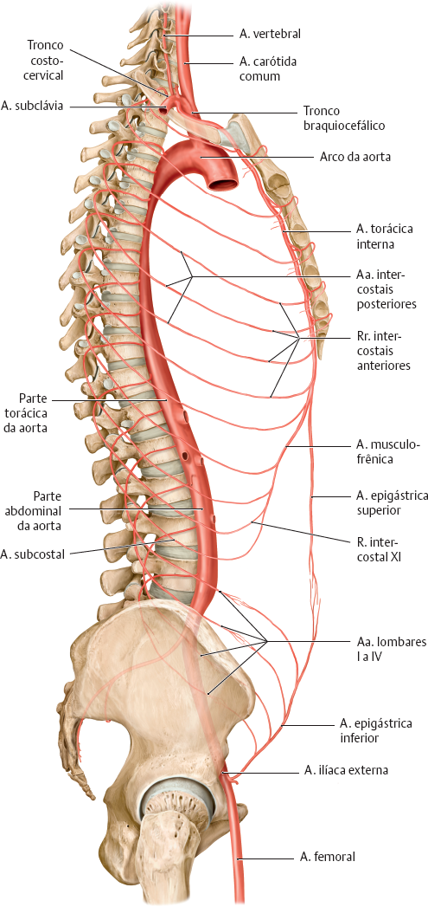
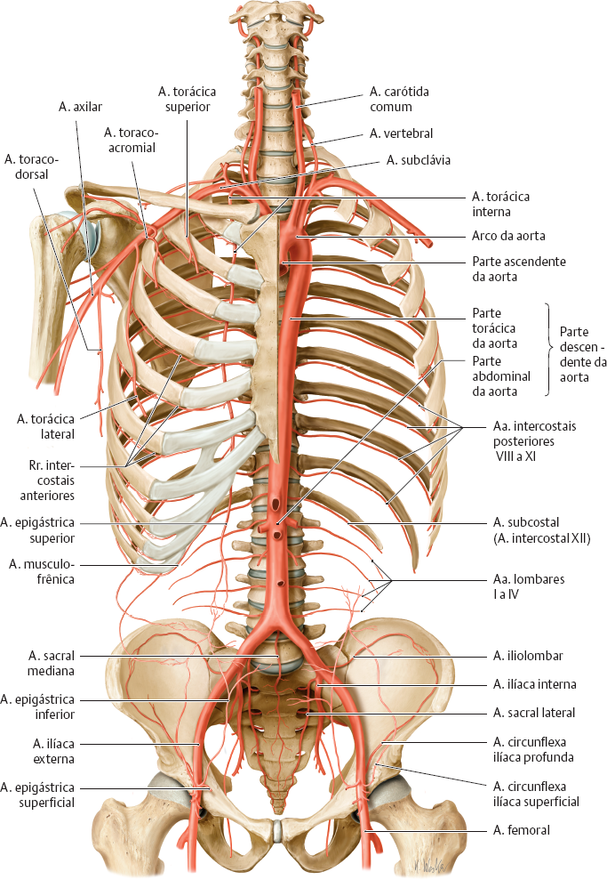
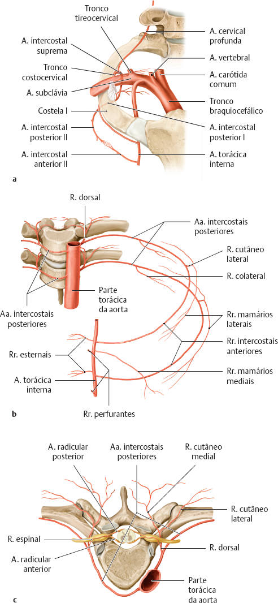
A drenagem venosa é feita por veias que geralmente acompanham as artérias, sendo mais variáveis e anastomóticas do que as artérias.
Veias Profundas: Geralmente, as veias profundas nos membros (e no tronco, por analogia) tomam a forma de pares de veias acompanhantes que circundam a artéria correspondente. As veias profundas da parede abdominal drenam o sangue para o sistema cava (Veias cavas superior e inferior).
Veias Superficiais: A drenagem superficial corre na tela subcutânea e é bastante importante clinicamente.
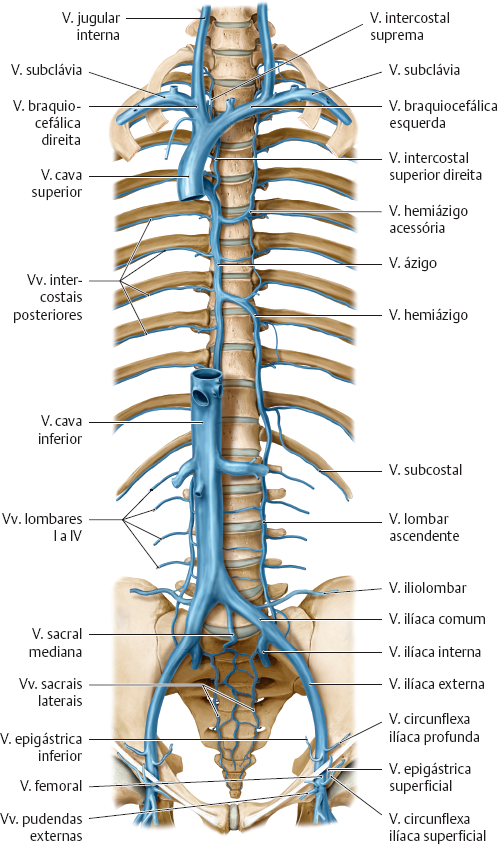
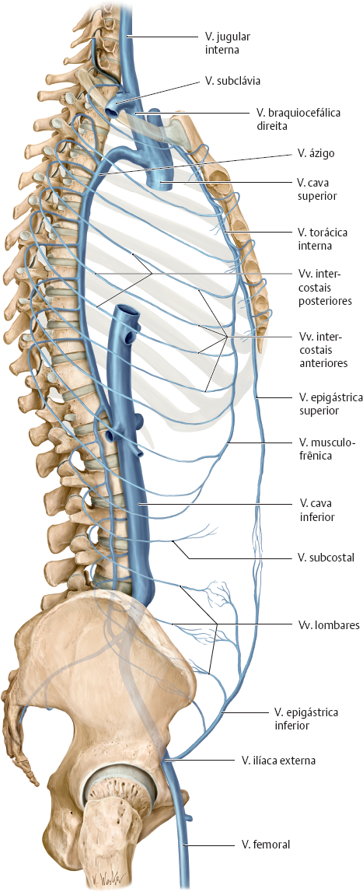
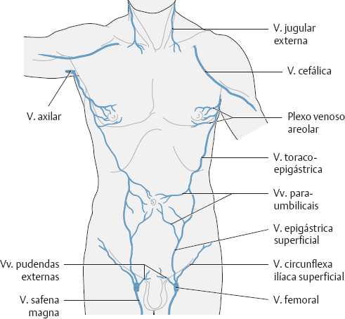
A importância clínica das veias superficiais da parede abdominal reside, principalmente, no fato de elas funcionarem como uma “rota de fuga” (circulação colateral) quando há obstrução em vasos profundos vitais (como a veia porta ou a veia cava).
Em condições normais, estas veias são pouco visíveis.
Quando se tornam dilatadas e evidentes (varizes abdominais), elas oferecem pistas diagnósticas cruciais sobre doenças hepáticas ou vasculares graves.
Aqui estão os principais aspectos da sua importância clínica:
Esta é talvez a manifestação clínica mais famosa.
Problema: Quando o fígado está cirrótico e endurecido, o sangue da veia porta não consegue atravessá-lo. A pressão aumenta (hipertensão portal).
Mecanismo: O sangue tenta voltar para o coração por caminhos alternativos. Um desses caminhos é a recanalização das veias paraumbilicais (no ligamento redondo), que conectam o fígado diretamente ao umbigo.
Sinal clínico: As veias superficiais ao redor do umbigo se dilatam de forma radial (como os raios de sol ou as serpentes na cabeça da Medusa).
Diagnóstico: Indica uma anastomose porto-cava (ligação entre o sistema portal e o sistêmico).
As veias superficiais também conectam a veia cava superior (tórax) à veia cava inferior (abdome/pelve). Se uma delas entope, as veias da pele do abdome servem de ponte.
Causa: Trombose, compressão por tumor ou gravidez.
Sinal: As veias dos flancos (laterais do abdome) se dilatam, especialmente a veia toracoepigástrica.
Sentido do Fluxo: O sangue que não consegue subir pela VCI profunda sobe pela pele. O fluxo é de baixo para cima em toda a parede abdominal (mesmo abaixo do umbigo, onde normalmente desceria).
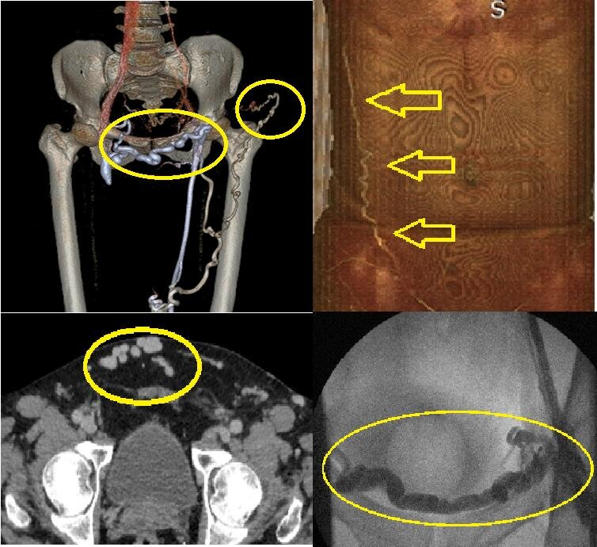
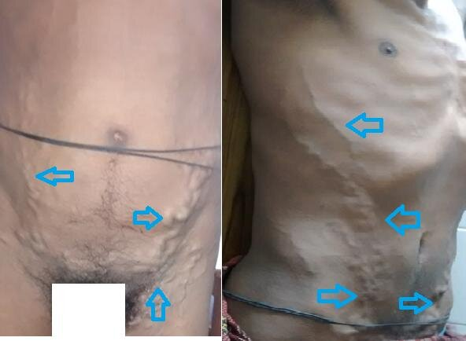
Causa: Tumores pulmonares ou mediastinais (síndrome da veia cava superior).
Sinal: O sangue da cabeça e braços não consegue descer pela via profunda. Ele desce pelas veias superficiais do tórax e abdome para entrar na VCI e chegar ao coração.
Sentido do Fluxo: O fluxo é de cima para baixo (reverso ao normal na parte superior do abdome).
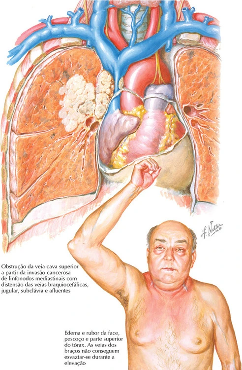
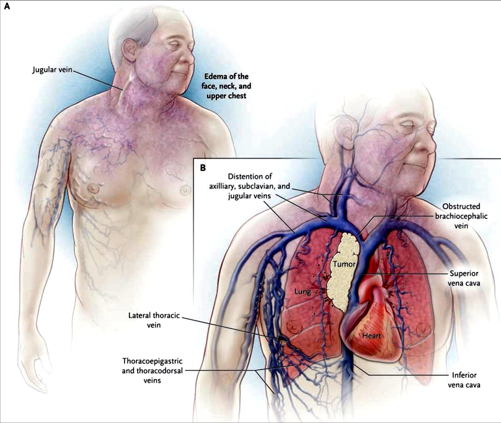
Para distinguir entre uma obstrução da veia cava e a hipertensão portal, o médico realiza uma manobra simples de esvaziamento da veia (Manobra de ordenha):
Escolhe-se um segmento de veia visível.
Com dois dedos, comprime-se a veia e afasta-se os dedos para esvaziar o sangue daquele trecho.
Solta-se um dos dedos para ver de onde o sangue vem (preenchimento).
Enchimento vindo do umbigo para fora: Sugere hipertensão portal (Cabeça de Medusa).
Enchimento vindo de baixo para cima (na região inferior): Sugere obstrução da VCI.
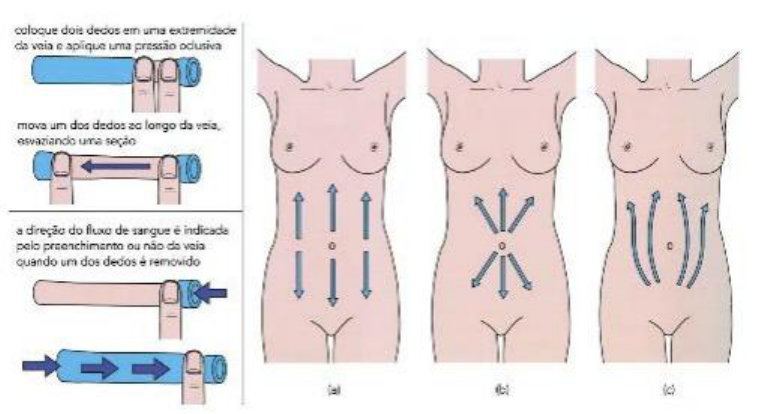
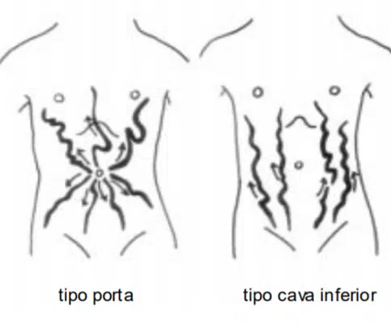
Incisões Abdominais: Durante cirurgias (como cesáreas ou laparotomias), o cirurgião deve estar atento a essas veias. Se o paciente tem circulação colateral (veias dilatadas), cortar essas veias pode causar sangramento excessivo, pois elas estão sob alta pressão para compensar uma obstrução interna.
Laparoscopia: A transiluminação da parede abdominal é usada antes de inserir os trocartes (instrumentos de furo) para evitar lesionar os vasos epigástricos superficiais e profundos, prevenindo hematomas de parede.